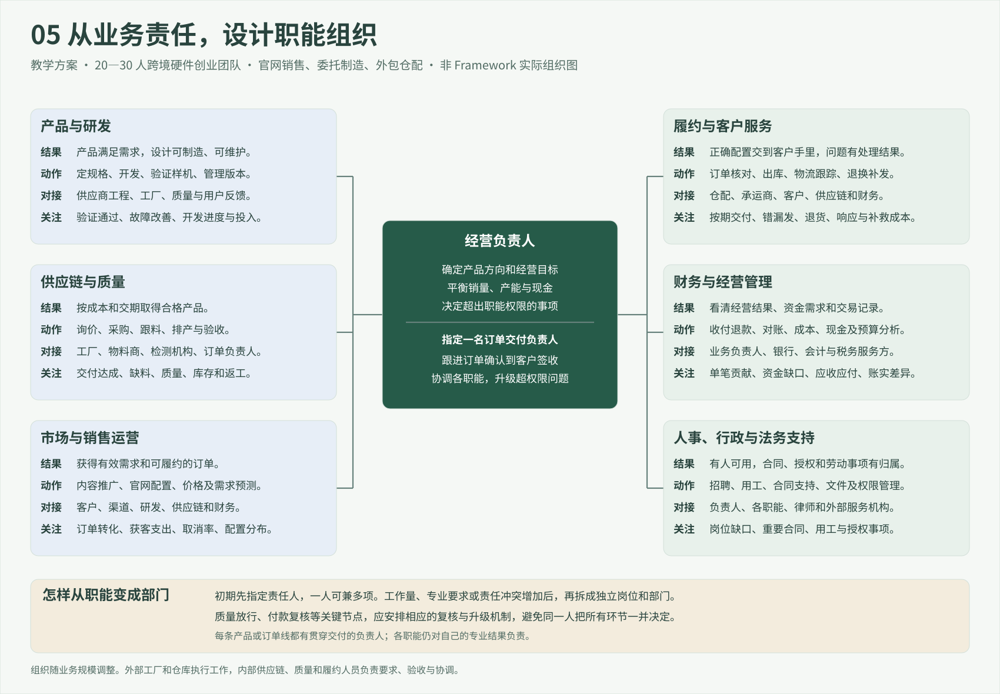
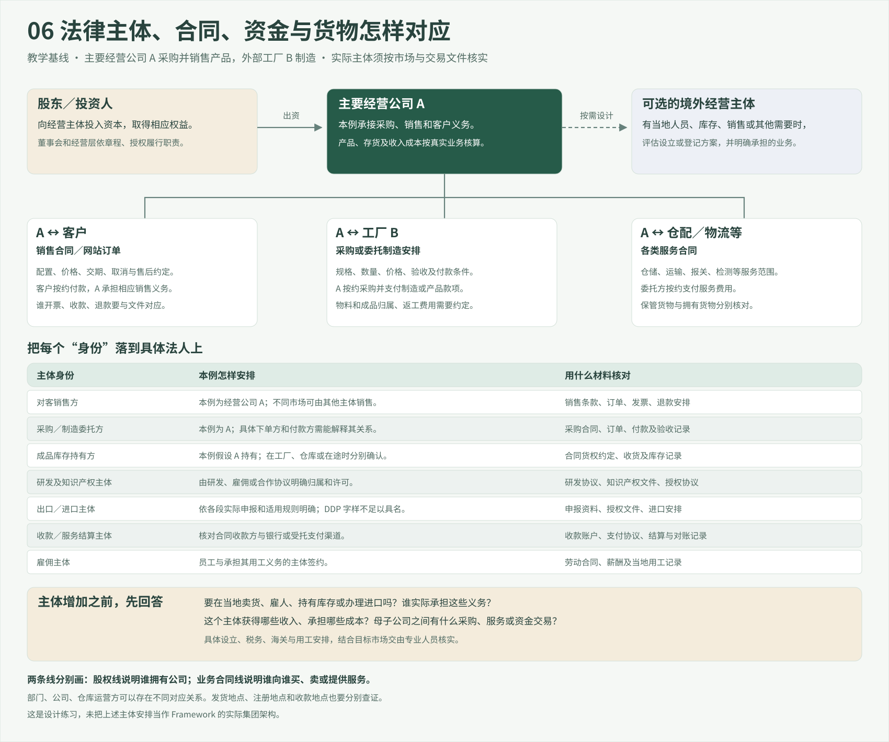
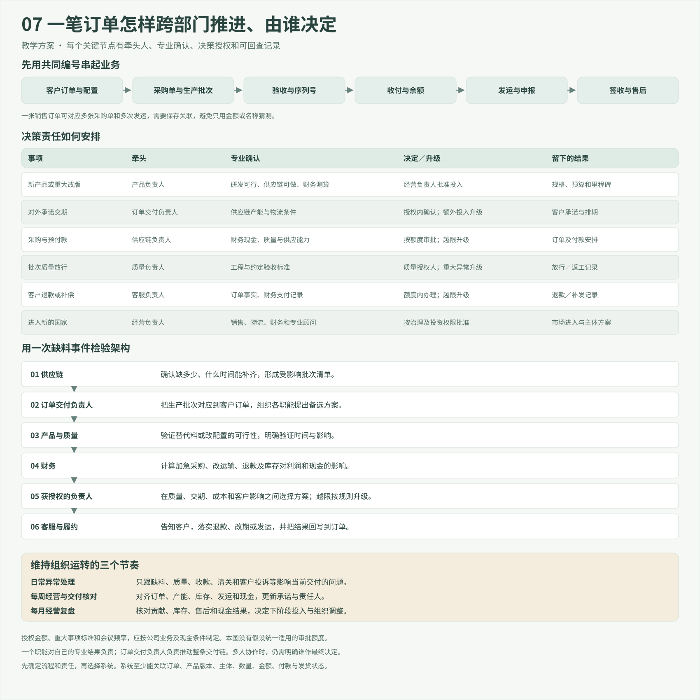

章节目录
第 06 章 · 组织与主体
公司架构怎样设计
把公司内部谁负责、外部谁签约，以及一笔订单如何跨部门推进，放在三张图里对照。
思维导图

初创团队的职能组织
按 20—30 人团队做教学设计，覆盖六项职能和订单交付负责人。

法律主体与合同、钱货关系
教学方案中的 A 公司和 B 工厂是示例主体。

订单协作、证据与决策权限
用缺料事件看跨部门推进、审批和记录。
具体情境
教学情境 以一家 20–30 人、官网销售、委托制造、外包仓配的跨境硬件团队为例。以下是组织设计练习，Framework 的真实集团架构需按公开文件另行核对。
先配责任，再设部门
把产品与研发、供应链与质量、市场与销售运营、履约与客服、财务与经营管理、人事行政及法务支持这六项责任落到人。初期可以兼任。指定订单交付负责人，协调销售承诺、可交产能和现金，涉及额外投入或重大异常时按授权升级。
把主体身份写进交易关系
用经营公司 A 对客销售、向工厂 B 采购的示例，逐项确认销售方、制造委托方、库存持有方、知识产权持有人、进口及出口主体、雇佣主体、收付款账户。公司与仓库的合作是服务关系，母子公司的股权和相互采购是两段不同关系。
有当地雇人、持有库存、合同签约、收款或进口等需求时，再核对当地规则并评估是否需要新主体。Framework 的公开销售条款按市场区分适用主体，具体交易应回到相应销售文件和申报资料核对。
用缺料事件检验组织是否有效
供应链列出缺口和新交期，订单交付负责人标出受影响客户，工程与质量验证替代料，财务测算加急、退款和现金变化。获授权的人选方案，客服更新客户，并把结果回写订单。
关键判断
- 内部负责人对专业结果负责，也需要订单负责人贯穿交付
- 可以委托工厂生产，但公司要定义验收标准和异常决策权。可追踪的负责人和记录能减少部门之间的信息断点。
- 按法律主体、合同、资金、货物分别核对
- 付款可以经过受托渠道，仓库可以是第三方。要明确每段角色，用采购单、验收记录、付款凭证和物流记录相互对应。
讨论题
先讨论，再展开参考分析。
供应商申请第二笔预付款，谁确认可以付？
供应链提供订单及付款条件，收货或质量人员确认约定节点及凭证，财务核对现金和交易记录，获授权的人审批。付款后与该订单关联。
海外仓在当地收货，是否需要马上设立当地子公司？
先确认谁持有存货、谁承担进口、对客销售和用工义务，再核对当地规则和合作方案。仓库地点本身不足以决定主体结构。